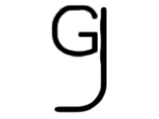
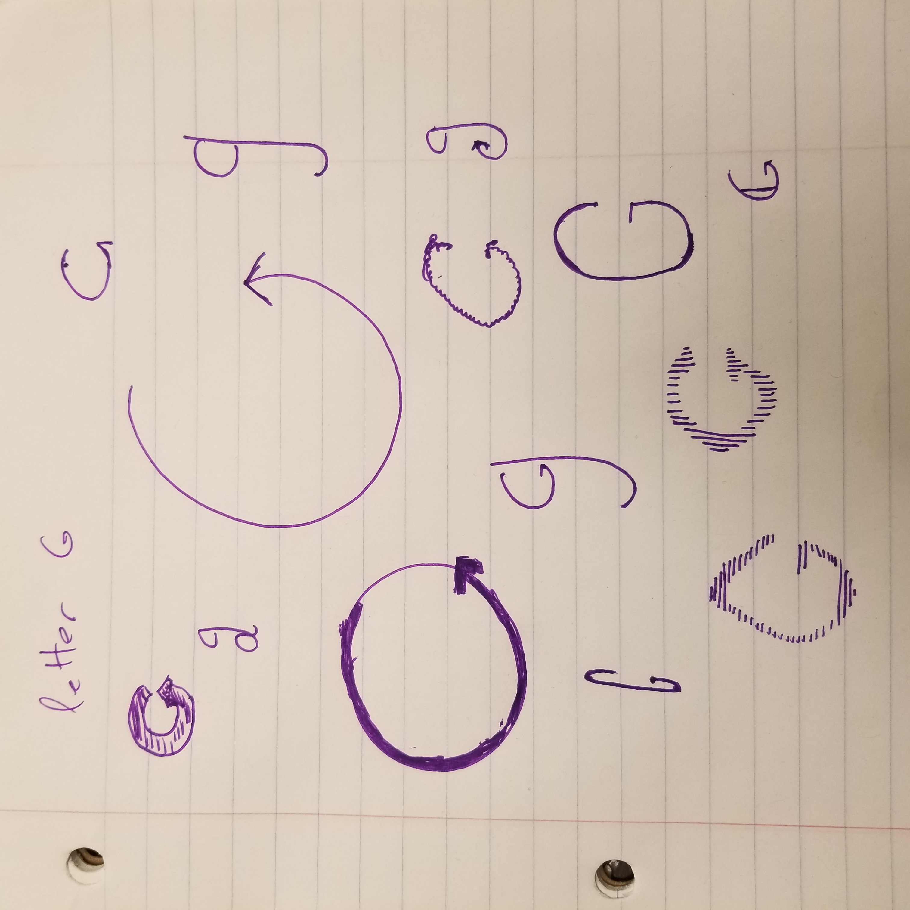

letter g
10.11.2019

modern english fonts contain twice as many characters as is truly necessary. as you can see by a majority of the text on this blog, one can present an idea without using any upper-case symbols. but why through them out completley. in my design, i combine the cases, to form the ultimate letter 'g'

of course, a design this impactful went through multiple iterations. as you can see by my sketches, i am a master at caligraphy, and while each letter 'g' pictured here would simply blow one's mind, i belive the final design to be the most future-defining.